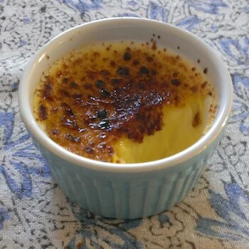
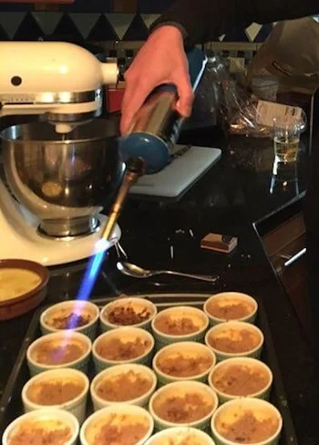

Crème brûlée recipe
Prep Time: 25 minutes - Cook Time: 1+ hour - Servings: 6

Ingredients for 6 large or 10 small crèmes brûlées:
- 45 cl heavy whipping cream (or half-and-half for the lighter version)
- 6 egg yolks
- 15 cl of milk (or almond milk)
- 1 pinch of salt
- 150 g of white granulated Sugar
- Brown sugar
- Vanilla extract
- A few raspberry, or lemon zest, or banana chunks, or pineapple chunks (optional)
- Rum or liquor (optional)
Tools:
- Large mixing bowl
- Whip
- Ramekins
- Torch or branding iron
Instructions:
- Pre-heat the oven to 250°F.
- Beat the egg yolks (no use for the whites).
- Add the sugar and a pinch of salt.
- Add the cream, the milk and the vanilla.
- Pour in ramekins.
- (optionally) Add fruit in some ramekins.
- Prepare "bain-marie": fill a long baking dish 1/3 with water and put the ramekins in it (the water should not go in the ramekins).
- Bake for about 1 hour depending on your oven (they are cooked when firm but not hard).
- Let cool down and put in the fridge for a few hours (they will be harder when cold).

Instructions for burning the caramel crust (just before serving):
Using a torch (I personaly use a Bernzomatic):
- Put some brown sugar on the cold custard.
- Put the flame on the brown sugar (not too close) and it will melt into caramel.
Using a crème brûlée branding iron (the old-fashion way):
- Put some brown sugar on the cold custard.
- Heat the branding iron by putting it directly on the burner until it's hot (but not turning red).
- Put the iron on the brown sugar and it will turn into caramel.
- If the branding iron is hot enough it can be used for 2 cremes in a row otherwise put it back on the burner before the next one.
Notes:
- Great w/ Sauterne wine.
- Replace the heavy whipping cream by some half-and-half (and cook 10 minutes longer) for a lighter version.